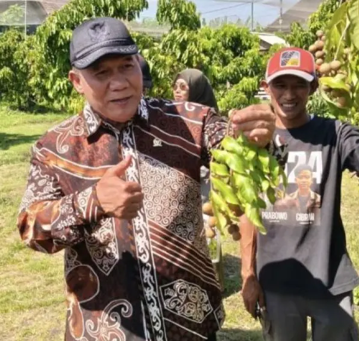
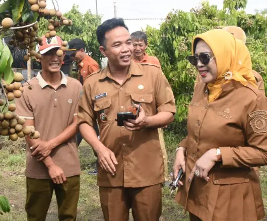

PENGUNJUNG

Kawasan ini memiliki potensi besar sebagai pusat pembelajaran bagi pelajar dari berbagai jenjang pendidikan di Sidoarjo. Tidak hanya wisata, tetapi juga edukasi tentang proses budidaya tanaman karena mampu menggabungkan sektor pertanian, perikanan, peternakan, hingga kuliner
Bambang Haryo Soekartono, Anggota DPR RI

Rasanya manis, bijinya kecil, ini klengkeng unggulan yang harus kita budidayakan. Ini dapat menjadi percontohan di setiap kecamatan untuk memanfaatkan lahan TKD atau lahan tidur.
Hj. Mimik Idayana, Wakil Bupati Sidoarjo